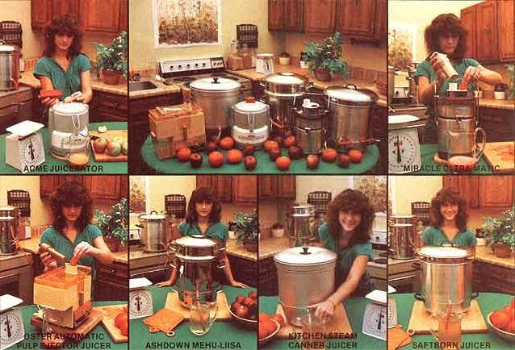

A juice extractor can save food dollars and help keep your family healthy . . . but read this articlebefore you buy one!
Winter is the perfect time to think back over the bounty of summer . . . and to judge just how efficiently you made use of your vegetable gifts. Unfortunately, most folks will-upon such self-examination-have to admit that all too much of the harvest's produce went to waste . . . as a result of inadequate storage space, a lack of time to process the fresh goodies, etc.
A juice extractor can help you avoid much of the spoilage that normally occurs when your garden or orchard gives you "too much of a good thing". And better yet, a "juicer" can be a real boon to you folks who want to maintain a healthful diet . . . because it allows you to consume wholesome fruits or vegetables in concentrated liquid form (three pounds of carrots, for instance, will reduce to a pint or two of juice . . . which your body can metabolize more easily than it could the whole vegetables).
With the advantages of juice extractors in mind, MOTHER set out to evaluate six popular models . . . in order to point out the good and not-so-good features of each, so you-should you be in the market for one of these handy devices-will be able to pick the juicer that best fits your budget and needs.
The three electric juicers, which formed one of our two test groups, all provide a super-quick means of obtaining fresh juice . . . and-since no heating is involved-produce healthful, raw liquids that retain most (if not all) of the vitamins, minerals, bioflavonoids, and enzymes found in the original foods.
Our three sample steamer-juicers-on the other hand-produce scalding hot, totally filtered juice (in greater quantities per pound of produce than do the mechanized devices, but at a loss of some vitamins) which can be bottled straight from the mechanism or turned into excellent jellies or wines. In addition, the steamers (which will also steam-cook vegetables, process food for freezing, and make purees) work fine atop a wood stove and, therefore, will appeal to folks who don't use electricity.
It should be noted, however, that the steamer-juicers require from 20 to 90 minutes' cooking time to produce juice. If you use an electric or gas range, you'd probably consume more energy-dollars to heat up your steamer than you would in operating an electric juicer.
The Acme Juicerator: Our evaluators found this firm's Model 5001 (which sells for $149.95) to be the most compact of the electric juicers that we tested. The Acme is solidly built-of stainless steel and plastic-and is easy to disassemble, as well. The testers did find the Juicerator's spinning screen/basket to be hard to clean, but Acme offers disposable mesh filters which should solve the wash-up problem and remove some portion of the fruit's pulp from the juice (an operation that the Juicerator does not normally perform).
The Miracle Ultra-Matic: This automatic juice extractor, and the Oster unit that follows, both remove a good portion of pulp from the juice (and that added function is reflected in their somewhat low scores in the "Yield" column of the accompanying chart). The Miracle features mostly stainless steel construction, and sells for $299.50. It's about the Easiest to clean of the automatic juicers, because it spits the fruit pulp into an external container . . . but it is a bit more complicated to disassemble than are the other models tested. In fact, the Miracle comes equipped with a special tool to make take-aparts less of a chore . . . a piece of equipment which, of course, carries the disadvantage of being "one more thing" to keep track of.
The Oster Automatic Pulp Ejector Juicer: Our testers were impressed with the fact that the Oster is easy to take apart and to reassemble, but noted that they found the unit difficult to clean. In addition, the workers weren't too fond of the Oster's mostly plastic construction. The rectangular juicer does have an ace in the hole, however: It's the least expensive of the "electrics" that we tested, costing only $86 for the Model 36204 evaluated by MOTHER. Our researchers al- so pointed out that-though it's a bit difficult to fit a quart jar under the Oster's awkwardly placed spout-the inexpensive juicer actually has several features that are lacking in the other electric units that we evaluated: a two-speed motor, an adjustable cord, and its own juice-catching container (complete with measuring marks).
The Ashdown Mehu-Liisa: All the parts of this Finnish-made, stainless steel juicer fit together perfectly and are very easy to clean. The unit has a thick, even heating base . . . a good-quality siphon hose (though the Saftborn juicer's hose clip is easier to use than that on the Ashdown product) . . . and spot-welded handles on all three levels. Our testers felt that the quality of construction and materials evident in the Mehu-Liisa (which costs $95 for the all-stainless-steel model and $76.50 for a design with an aluminum base) greatly exceeded those of the other steamers that we tested. This quality doesn't mean, however, that the Finnish unit works any better . . . it's just easier to clean, probably more durable, and prettier to have around.
Since it's all aluminum, without a thick bottom pan, this juicer is the least "solid" of the steam models tested . . . and tends to develop "hot spots" when in use. (On the other hand, the Kitchen Steam only costs $38! )
The device's handles are made of a plastic that insulates much better than do the steel handles on the other two steamers, but its bottom pan-besides being significantly smaller than the others-has no handles at all! Therefore, if the juicer has to be lifted, the hot base must be left behind. And-because of the unit's aluminum construction-this steamer won't come clean without a good application of "elbow grease".
Finally, the trough around our test model's vegetable pan trapped some of the liquid and prevented it from falling to the juice level . . . and the siphon became soft under heat and occasionally fell off.
The Saftborn Juicer: Although this steamer-like the unit described above -is made of aluminum, it has a heavy bottom pan that distributes heat evenly. The siphon hose is made of good rubber and glass, and has a clamp that's very easy to operate. However-though the Saftborn's bottom pan is as deep as is that of the this $50.70 juicer has no handles on the fruit level and also requires heavy cleanup scouring . . . because the aluminum tends to stain.
All in all-since any one of the juicers tested will give you gallons of glorious juice and prove to be a wise investment in terms of easy food processing and better diet-the choice really boils down to the questions of esthetics, durability, minor conveniences, and the price you can afford to pay. The main point we'd like to make is this: However you do it, it's smart to "juice it up"!
We didn't include the Vita-Mix 3600 in our juicer comparisons, simply because this multipurpose tool lists "juicin"' as only one of a number of talents! Besides making a thick, concentrated juice of the whole fruit or vegetable (peel, seed, stems, and all), the device can-among other things -grind grain, knead bread, chop ice, make ice cream, produce nut butters, cook soup, and chop salad. The VitaMix, which looks very much like a big blender with a spigot, is also "self-cleaning"!
The super-duper, stainless steel appliance sells for $295.95 ... with a five-year parts replacement guarantee. Write Vita-Mix Corporation, Dept. TMEN, 8615 Usher Road, Olmsted Falls, Ohio 44138 if you'd like to have further information.
|
 |
|
|